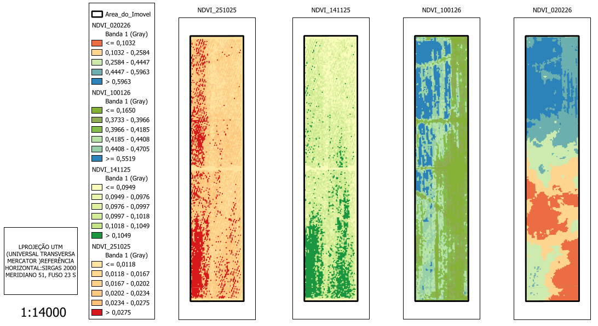

🗺️
Área Total
125,01 ha
📈
Média Estimada
63,96 sc/ha
🌾
Produção Total
7.995,7 sacas
✨
Vigor Alto (NDVI)
78% da área
Monitoramento Espacial de Vigor (NDVI)
Esta seção centraliza a análise de vigor vegetativo do Talhão 250. Abaixo, você encontrará o mapa de satélite Sentinel-2 fornecido para Janeiro de 2026, processado para destacar as zonas de saúde da lavoura. O gráfico e a tabela de resumo contextualizam esses dados com o cronograma fenológico da safra, mostrando como o vigor atual se alinha aos picos produtivos esperados.
Mapa de Vigor (Janeiro 2026)
<
Análise do Mapa: A predominância de cores verdes escuras no mapa visualizado confirma a leitura estatística de 78% de Vigor Alto. No entanto, observe com atenção as bordaduras e carreadores (manchas amarelas e vermelhas) na imagem fornecida, que representam as zonas de vigor médio e baixo descritas na estimativa de colheita.
Curva de Vigor (NDVI)
Resumo Estatístico e Contexto Fenológico
| Data | DAP (Dias Pós-Plantio) | Estágio Fenológico | Observação da Planta |
|---|---|---|---|
| 25/10/25 | 5 dias | VE (Emergência) | Planta emerge do solo. |
| 10/01/26 | 82 dias | R1 (Início Floração) / R3 (Vagens) | Auge do Vigor. Máxima fotossíntese para proteger vagens. |
| 02/02/26 | 105 dias | R5 (Enchimento de Grãos) / R6 | Grãos cheios. Início da transição de nutrientes foliares. |
Análise ISA: O pico de vigor máximo lido em Janeiro de 2026 ($0,551$) coincide perfeitamente com o estágio reprodutivo crítico de formação de vagens ($R3$), provando que a nutrição de base e a chuva vegetativa foram fundamentais para sustentar o teto produtivo nas áreas de vigor alto.